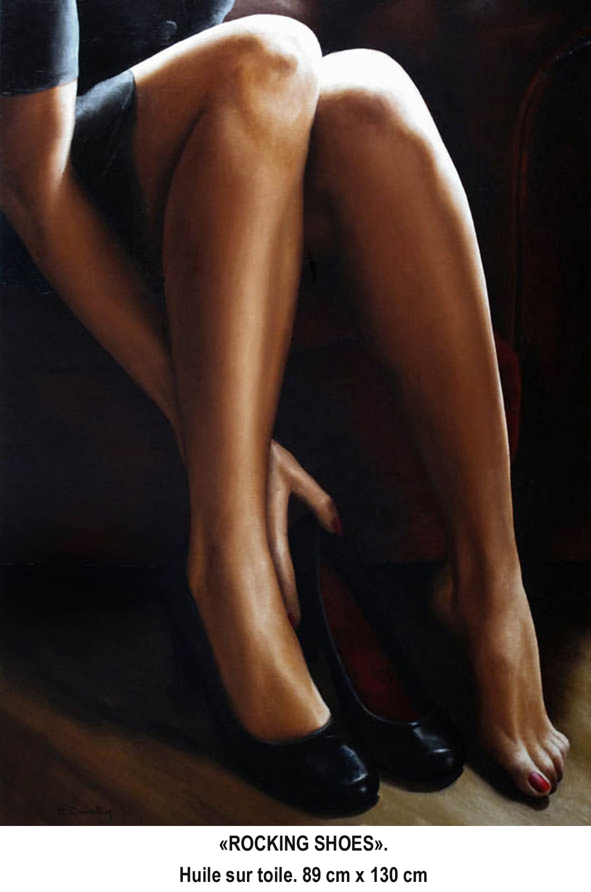

Close up
Rocking Shoes
- Technique
- Huile sur Toile
- Dimensions
- 89 × 130 cm
- Année
- 2011
- Disponibilité
- Vendue
« Rocking Shoes » est une œuvre d’Annick Bouvattier, réalisée en 2011 (huile sur toile, 89 × 130 cm). Elle fait partie de la collection « Close up ». Cette œuvre a été vendue.
“Rocking Shoes” is a work by Annick Bouvattier, created in 2011 (oil on canvas, 89 × 130 cm). It belongs to the “Close-up” collection. This work has been sold.
«Rocking Shoes» es una obra de Annick Bouvattier, realizada en 2011 (óleo sobre lienzo, 89 × 130 cm). Forma parte de la colección «Primer plano». Esta obra ha sido vendida.
«Rocking Shoes» è un'opera di Annick Bouvattier, realizzata nel 2011 (olio su tela, 89 × 130 cm). Fa parte della collezione «Primo piano». Quest'opera è stata venduta.